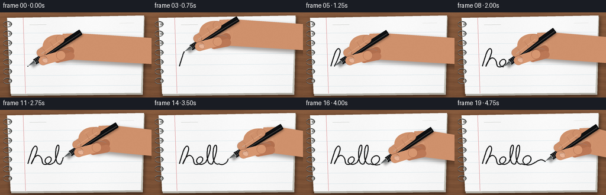
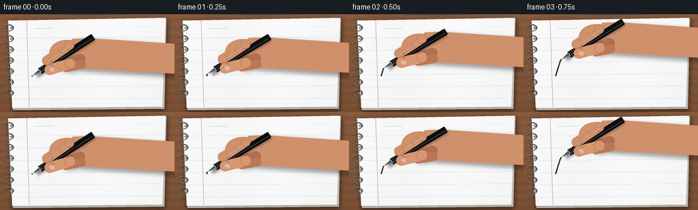

CODING AGENTS AS PIXEL WORLD MODELS
traex/GPT-5.6-Sol · phygen_035
点击播放 · 原生 RGB 像素
逐轮保存的候选
回放视频、检查图与代码变化。
每份候选均可单独播放。实际图片检查记录在下方工具轨迹中。
候选 01播放与检查图
点击播放 · 原生 RGB 像素

展开代码变化
--- 上一保存版本
+++ 本次保存版本
@@ -0,0 +1,253 @@
+from pathlib import Path
+import math
+import numpy as np
+from PIL import Image, ImageDraw, ImageFilter
+import artifact_io
+
+# Deterministic, hand-drawn macro scene rendered at 4x and downsampled.
+W, H, N, SS = 256, 144, 20, 4
+rng = np.random.default_rng(35035)
+
+def sc(v):
+ if isinstance(v, (tuple, list, np.ndarray)):
+ return tuple(int(round(float(x)*SS)) for x in v)
+ return int(round(v*SS))
+
+def bez(p0,p1,p2,p3,n=24):
+ t=np.linspace(0,1,n,endpoint=False)[:,None]
+ p0,p1,p2,p3=map(lambda p:np.array(p,float), (p0,p1,p2,p3))
+ return (1-t)**3*p0 + 3*(1-t)**2*t*p1 + 3*(1-t)*t**2*p2 + t**3*p3
+
+# A single connected cursive stroke spelling "hello", ideal for clearly showing ink deposition.
+curves = [
+ ((47,91),(51,79),(55,61),(60,61)),
+ ((60,61),(67,63),(58,80),(53,91)),
+ ((53,91),(58,77),(64,74),(68,79)),
+ ((68,79),(73,84),(69,91),(75,92)),
+ ((75,92),(80,93),(89,87),(86,81)),
+ ((86,81),(82,76),(73,84),(77,89)),
+ ((77,89),(81,94),(88,92),(92,88)),
+ ((92,88),(97,78),(101,63),(99,60)),
+ ((99,60),(95,57),(93,70),(94,81)),
+ ((94,81),(95,89),(98,93),(103,91)),
+ ((103,91),(108,80),(112,63),(109,60)),
+ ((109,60),(105,58),(103,70),(104,81)),
+ ((104,81),(105,89),(109,93),(114,91)),
+ ((114,91),(118,94),(126,92),(129,85)),
+ ((129,85),(131,78),(124,75),(118,80)),
+ ((118,80),(112,86),(117,93),(124,93)),
+ ((124,93),(132,93),(137,87),(143,85)),
+ ((143,85),(147,83),(150,85),(153,87)),
+]
+pts=[]
+for c in curves: pts.extend(bez(*c,n=18).tolist())
+pts.append(list(curves[-1][-1]))
+pts=np.array(pts)
+# arc-length resampling for smooth, believable nib velocity
+seg=np.linalg.norm(np.diff(pts,axis=0),axis=1)
+cum=np.r_[0,np.cumsum(seg)]
+L=cum[-1]
+
+def path_prefix(frac):
+ d=frac*L
+ k=int(np.searchsorted(cum,d,side='right')-1)
+ k=max(0,min(k,len(pts)-2))
+ a=(d-cum[k])/max(seg[k],1e-8)
+ tip=pts[k]*(1-a)+pts[k+1]*a
+ out=np.vstack([pts[:k+1],tip])
+ return out,tip,k
+
+def polygon_layer(base, xy, fill, blur=0):
+ lay=Image.new('RGBA',base.size,(0,0,0,0)); d=ImageDraw.Draw(lay)
+ d.polygon([sc(p) for p in xy],fill=fill)
+ if blur: lay=lay.filter(ImageFilter.GaussianBlur(sc(blur)))
+ base.alpha_composite(lay)
+
+def ellipse_rot(base, center, radii, angle, fill, outline=None, width=1):
+ # Transparent local ellipse, rotated with high quality.
+ rx,ry=radii
+ pad=4
+ box=Image.new('RGBA',sc((2*(rx+pad),2*(ry+pad))),(0,0,0,0))
+ dd=ImageDraw.Draw(box)
+ dd.ellipse((sc(pad),sc(pad),sc(pad+2*rx),sc(pad+2*ry)),fill=fill,outline=outline,width=sc(width) if outline else 1)
+ box=box.rotate(angle,resample=Image.Resampling.BICUBIC,expand=True)
+ x=int(center[0]*SS-box.width/2); y=int(center[1]*SS-box.height/2)
+ base.alpha_composite(box,(x,y))
+
+def capsule(base, a, b, width, fill, outline=None, olwidth=1):
+ d=ImageDraw.Draw(base)
+ a,b=np.array(a,float),np.array(b,float)
+ r=width/2
+ d.line([sc(a),sc(b)],fill=fill,width=sc(width))
+ d.ellipse((sc(a[0]-r),sc(a[1]-r),sc(a[0]+r),sc(a[1]+r)),fill=fill,outline=outline,width=sc(olwidth) if outline else 1)
+ d.ellipse((sc(b[0]-r),sc(b[1]-r),sc(b[0]+r),sc(b[1]+r)),fill=fill,outline=outline,width=sc(olwidth) if outline else 1)
+
+# Base desk texture, fixed to camera.
+yy,xx=np.mgrid[0:H*SS,0:W*SS]
+xf=xx/SS; yf=yy/SS
+wood=np.empty((H*SS,W*SS,3),dtype=np.float32)
+base=np.array([118,78,52],float)
+illum=12*(1-yf/H)+4*np.cos((xf+yf*.25)/39)
+grain=4*np.sin(yf*0.52+2*np.sin(xf/27))+2*np.sin(yf*1.42+xf*.03)
+noise=rng.normal(0,1.25,(H*SS,W*SS))
+for c,m in enumerate([1.0,.76,.55]): wood[:,:,c]=base[c]+illum*m+grain*m+noise
+# subtle horizontal wood seams
+for line in [8,137]: wood += (-5*np.exp(-((yf-line)/.65)**2))[...,None]
+wood=np.clip(wood,0,255).astype(np.uint8)
+background=Image.fromarray(wood,'RGB').convert('RGBA')
+
+# Notebook geometry and page texture are static.
+scene_static=background.copy()
+# soft notebook drop shadow
+shadow=Image.new('RGBA',scene_static.size,(0,0,0,0)); sd=ImageDraw.Draw(shadow)
+sd.polygon([sc(p) for p in [(13,12),(246,8),(242,142),(18,143)]],fill=(18,12,8,145))
+shadow=shadow.filter(ImageFilter.GaussianBlur(sc(3.2))); scene_static.alpha_composite(shadow)
+# lower stacked sheets
+D=ImageDraw.Draw(scene_static)
+D.polygon([sc(p) for p in [(14,11),(244,7),(241,139),(19,141)]],fill=(190,188,179,255))
+D.line([sc((20,139)),sc((240,137))],fill=(152,150,143,255),width=sc(1))
+D.polygon([sc(p) for p in [(12,9),(243,5),(238,136),(18,138)]],fill=(249,248,242,255))
+# paper texture clipped by page polygon
+page_mask=Image.new('L',scene_static.size,0); md=ImageDraw.Draw(page_mask)
+page_poly=[(12,9),(243,5),(238,136),(18,138)]
+md.polygon([sc(p) for p in page_poly],fill=255)
+paper_arr=np.zeros((H*SS,W*SS,4),dtype=np.uint8)
+paper_noise=rng.normal(0,1.1,(H*SS,W*SS))
+paper_light=1.5*np.cos(xf/25)+2.2*(1-yf/H)
+val=np.clip(247+paper_noise+paper_light,235,252).astype(np.uint8)
+paper_arr[:,:,:3]=val[...,None]; paper_arr[:,:,3]=np.asarray(page_mask)
+scene_static.alpha_composite(Image.fromarray(paper_arr,'RGBA'))
+D=ImageDraw.Draw(scene_static)
+# ruled lines with the slight slope of page perspective
+for y in [34,52,70,88,106,124]:
+ D.line([sc((18,y+1)),sc((240,y-1))],fill=(174,204,216,145),width=sc(.55))
+# red margin rule
+D.line([sc((39,8.5)),sc((43,137))],fill=(221,154,157,150),width=sc(.7))
+# tiny printed header marks reinforce "notebook"
+D.line([sc((50,21)),sc((78,20.5))],fill=(193,195,191,150),width=sc(.7))
+D.line([sc((202,18)),sc((226,17.5))],fill=(200,201,196,125),width=sc(.6))
+# punched holes and spiral binding along left edge
+for y in range(20,132,16):
+ D.ellipse((sc(14.5),sc(y-2.1),sc(19),sc(y+2.1)),fill=(150,151,148,220))
+ # wire loop: shadow and metallic arc, extending off the page
+ D.arc((sc(5),sc(y-5),sc(20),sc(y+5)),195,520,fill=(48,47,45,230),width=sc(1.35))
+ D.arc((sc(5.6),sc(y-5.4),sc(20.5),sc(y+4.5)),195,520,fill=(178,181,180,220),width=sc(.55))
+# page boundary
+D.line([sc(p) for p in page_poly+[page_poly[0]]],fill=(206,204,196,190),width=sc(.6))
+
+frames=[]
+for fi in range(N):
+ im=scene_static.copy()
+ # Slight ease-in/out, while still traversing the entire handwritten word.
+ q=fi/(N-1)
+ prog=q*q*(3-2*q)
+ prefix, tip, k=path_prefix(prog)
+ # deposited ink: faint soft edge + dense black core. Always terminates beneath nib.
+ ink=Image.new('RGBA',im.size,(0,0,0,0)); idr=ImageDraw.Draw(ink)
+ ip=[sc(p) for p in prefix]
+ if len(ip)>=2:
+ idr.line(ip,fill=(15,16,17,52),width=sc(2.35),joint='curve')
+ idr.line(ip,fill=(10,11,12,255),width=sc(1.45),joint='curve')
+ else:
+ idr.ellipse((sc(tip[0]-.7),sc(tip[1]-.7),sc(tip[0]+.7),sc(tip[1]+.7)),fill=(8,9,10,255))
+ # Wet sheen only at the last few millimetres.
+ if len(prefix)>4:
+ idr.line([sc(p) for p in prefix[-7:]],fill=(35,38,41,210),width=sc(.45))
+ im.alpha_composite(ink)
+
+ # Mostly stable writing angle, with tiny natural articulation.
+ angle=-33 + 2.0*math.sin(fi*.62) + 0.7*math.sin(fi*1.37)
+ ar=math.radians(angle); u=np.array([math.cos(ar),math.sin(ar)])
+ n=np.array([-u[1],u[0]])
+ # hand shadow first: a union of soft palm/finger silhouettes
+ hs=Image.new('RGBA',im.size,(0,0,0,0))
+ palm=tip+62*u+2*n
+ hsd=ImageDraw.Draw(hs)
+ # wrist/palm broad silhouette
+ wrist_pts=[palm+np.array([7,-24]), palm+np.array([30,-25]), np.array([270,palm[1]-16]),
+ np.array([270,palm[1]+31]), palm+np.array([26,22]), palm+np.array([-4,19])]
+ hsd.polygon([sc(p+(2.5,3.5)) for p in wrist_pts],fill=(45,28,18,105))
+ hsd.ellipse((sc(palm[0]-24+2.5),sc(palm[1]-20+3.5),sc(palm[0]+29+2.5),sc(palm[1]+22+3.5)),fill=(45,28,18,110))
+ # finger shadow along shaft
+ a=tip+27*u-7*n; b=tip+69*u-8*n
+ hsd.line([sc(a+(2.5,3.5)),sc(b+(2.5,3.5))],fill=(40,24,15,110),width=sc(16))
+ hs=hs.filter(ImageFilter.GaussianBlur(sc(3.0))); im.alpha_composite(hs)
+
+ # back of hand and wrist, warm skin with layered shading
+ hand=Image.new('RGBA',im.size,(0,0,0,0)); hd=ImageDraw.Draw(hand)
+ skin=(207,145,108,255); skin_dark=(177,111,78,255); skin_light=(230,174,137,255)
+ wrist_pts=[palm+np.array([6,-23]), palm+np.array([30,-24]), np.array([270,palm[1]-15]),
+ np.array([270,palm[1]+29]), palm+np.array([25,21]), palm+np.array([-6,18])]
+ hd.polygon([sc(p) for p in wrist_pts],fill=skin)
+ ellipse_rot(hand,palm,(28,21),-8,skin)
+ # soft highlight over back of palm
+ ellipse_rot(hand,palm+np.array([2,-5]),(21,10),-10,(224,164,127,90))
+ # lower folded fingers behind pen
+ capsule(hand,tip+46*u+11*n,tip+73*u+17*n,15,skin_dark)
+ capsule(hand,tip+49*u+17*n,tip+70*u+25*n,13,(188,120,86,255))
+ # subtle palm crease
+ hd=ImageDraw.Draw(hand)
+ hd.arc((sc(palm[0]-6),sc(palm[1]+3),sc(palm[0]+24),sc(palm[1]+22)),195,310,fill=(159,94,68,115),width=sc(.7))
+ im.alpha_composite(hand)
+
+ # Pen shadow follows the rigid pen, offset on paper/hand.
+ ps=Image.new('RGBA',im.size,(0,0,0,0)); pd=ImageDraw.Draw(ps)
+ p0=tip+6*u; p1=tip+106*u
+ pd.line([sc(p0+(2,2.5)),sc(p1+(2,2.5))],fill=(0,0,0,95),width=sc(7.5))
+ ps=ps.filter(ImageFilter.GaussianBlur(sc(1.7))); im.alpha_composite(ps)
+
+ # Black ballpoint pen, tapering precisely to the contacted nib.
+ pen=Image.new('RGBA',im.size,(0,0,0,0)); pdr=ImageDraw.Draw(pen)
+ # metal cone from contact point to barrel
+ cone=[tip, tip+15*u+3.0*n, tip+15*u-3.0*n]
+ pdr.polygon([sc(p) for p in cone],fill=(80,84,85,255))
+ pdr.line([sc(tip+.8*u),sc(tip+14*u+1.5*n)],fill=(194,198,197,220),width=sc(.65))
+ # black barrel polygon with cap end
+ a=tip+13.5*u; b=tip+106*u; r=4.7
+ poly=[a+r*n,b+r*n,b-r*n,a-r*n]
+ pdr.polygon([sc(p) for p in poly],fill=(13,15,17,255))
+ pdr.line([sc(a+r*n),sc(b+r*n)],fill=(4,5,6,255),width=sc(.7))
+ pdr.line([sc(a+1.6*n),sc(b+1.6*n)],fill=(75,79,82,220),width=sc(.75))
+ # grip rings and silver collar
+ for dist in [17,20,23]:
+ c=tip+dist*u
+ pdr.line([sc(c-4.5*n),sc(c+4.5*n)],fill=(48,50,51,210),width=sc(.65))
+ c=tip+14*u
+ pdr.line([sc(c-3.2*n),sc(c+3.2*n)],fill=(172,176,175,255),width=sc(1.1))
+ # rounded cap end
+ c=tip+106*u
+ pdr.line([sc(c-4.5*n),sc(c+4.5*n)],fill=(4,5,6,255),width=sc(1.5))
+ # tiny ball and contact point
+ pdr.ellipse((sc(tip[0]-.65),sc(tip[1]-.65),sc(tip[0]+.65),sc(tip[1]+.65)),fill=(3,4,5,255))
+ im.alpha_composite(pen)
+
+ # Foreground gripping fingers: index rests along upper side, thumb crosses at grip.
+ fg=Image.new('RGBA',im.size,(0,0,0,0))
+ # index finger angled toward nib, leaving cone and much of barrel visible
+ ia=tip+31*u-7.2*n; ib=tip+71*u-8.8*n
+ capsule(fg,ia,ib,14.5,skin,outline=(160,99,72,180),olwidth=.55)
+ # index highlight and joint crease
+ fgd=ImageDraw.Draw(fg)
+ fgd.line([sc(ia+1.8*n),sc(ib+1.8*n)],fill=(235,182,146,120),width=sc(1.1))
+ jc=tip+56*u-8.5*n
+ fgd.line([sc(jc-5*n-2*u),sc(jc+4*n-2*u)],fill=(164,100,72,120),width=sc(.65))
+ # thumb reaches diagonally across grip
+ ta=tip+57*u+15*n; tb=tip+27*u+6*n
+ capsule(fg,ta,tb,15.8,(215,151,113,255),outline=(163,100,72,180),olwidth=.55)
+ # thumbnail, placed close to gripping end
+ nailc=tb+2.8*u+1.5*n
+ ellipse_rot(fg,nailc,(5.4,3.8),angle,(235,185,159,215),outline=(184,124,99,150),width=.45)
+ # small cuticle and thumb highlight
+ fgd=ImageDraw.Draw(fg)
+ fgd.arc((sc(nailc[0]-5),sc(nailc[1]-3.6),sc(nailc[0]+5),sc(nailc[1]+3.6)),185,345,fill=(251,208,179,150),width=sc(.45))
+ im.alpha_composite(fg)
+
+ # Downsample gives antialiased, photographic edges; then gentle sensor grain.
+ rgb=im.convert('RGB').resize((W,H),Image.Resampling.LANCZOS)
+ arr=np.asarray(rgb).astype(np.int16)
+ frame_noise=rng.normal(0,.42,arr.shape[:2])[:,:,None]
+ arr=np.clip(arr+frame_noise,0,255).astype(np.uint8)
+ frames.append(arr)
+
+frames=np.stack(frames,axis=0)
+artifact_io.save(frames,Path(__file__).resolve().parent)
可观测工具轨迹
实际执行的命令与返回图片。
命令 1exit 0
/bin/bash -lc "cat prompt.txt && printf '\\n---RULES---\\n' && cat GENERATION_RULES.md && printf '\\n---SPEC---\\n' && cat task_spec.json"
命令 2exit 0
/bin/bash -lc "find . -maxdepth 2 -type f -printf '%p %s bytes\\n' | sort | head -200"
命令 3exit 0
/bin/bash -lc "which ffmpeg; which blender; which python3; python3 - <<'PY'
try:
import cv2; print('cv2',cv2.__version__)
except Exception as e: print('no cv2',e)
try:
import PIL; print('PIL',PIL.__version__)
except Exception as e: print('no PIL',e)
try:
import numpy; print('numpy',numpy.__version__)
except Exception as e: print('no numpy',e)
PY"命令 4exit 0
/bin/bash -lc "sed -n '1,240p' artifact_io.py"
命令 5exit 0
/bin/bash -lc "cat > generate.py <<'PY'
from pathlib import Path
import math
import numpy as np
from PIL import Image, ImageDraw, ImageFilter
import artifact_io
# Deterministic, hand-drawn macro scene rendered at 4x and downsampled.
W, H, N, SS = 256, 144, 20, 4
rng = np.random.default_rng(35035)
def sc(v):
if isinstance(v, (tuple, list, np.ndarray)):
return tuple(int(round(float(x)*SS)) for x in v)
return int(round(v*SS))
def bez(p0,p1,p2,p3,n=24):
t=np.linspace(0,1,n,endpoint=False)[:,None]
p0,p1,p2,p3=map(lambda p:np.array(p,float), (p0,p1,p2,p3))
return (1-t)**3*p0 + 3*(1-t)**2*t*p1 + 3*(1-t)*t**2*p2 + t**3*p3
# A single connected cursive stroke spelling \"hello\", ideal for clearly showing ink deposition.
curves = [
((47,91),(51,79),(55,61),(60,61)),
((60,61),(67,63),(58,80),(53,91)),
((53,91),(58,77),(64,74),(68,79)),
((68,79),(73,84),(69,91),(75,92)),
((75,92),(80,93),(89,87),(86,81)),
((86,81),(82,76),(73,84),(77,89)),
((77,89),(81,94),(88,92),(92,88)),
((92,88),(97,78),(101,63),(99,60)),
((99,60),(95,57),(93,70),(94,81)),
((94,81),(95,89),(98,93),(103,91)),
((103,91),(108,80),(112,63),(109,60)),
((109,60),(105,58),(103,70),(104,81)),
((104,81),(105,89),(109,93),(114,91)),
((114,91),(118,94),(126,92),(129,85)),
((129,85),(131,78),(124,75),(118,80)),
((118,80),(112,86),(117,93),(124,93)),
((124,93),(132,93),(137,87),(143,85)),
((143,85),(147,83),(150,85),(153,87)),
]
pts=[]
for c in curves: pts.extend(bez(*c,n=18).tolist())
pts.append(list(curves[-1][-1]))
pts=np.array(pts)
# arc-length resampling for smooth, believable nib velocity
seg=np.linalg.norm(np.diff(pts,axis=0),axis=1)
cum=np.r_[0,np.cumsum(seg)]
L=cum[-1]
def path_prefix(frac):
d=frac*L
k=int(np.searchsorted(cum,d,side='right')-1)
k=max(0,min(k,len(pts)-2))
a=(d-cum[k])/max(seg[k],1e-8)
tip=pts[k]*(1-a)+pts[k+1]*a
out=np.vstack([pts[:k+1],tip])
return out,tip,k
def polygon_layer(base, xy, fill, blur=0):
lay=Image.new('RGBA',base.size,(0,0,0,0)); d=ImageDraw.Draw(lay)
d.polygon([sc(p) for p in xy],fill=fill)
if blur: lay=lay.filter(ImageFilter.GaussianBlur(sc(blur)))
base.alpha_composite(lay)
def ellipse_rot(base, center, radii, angle, fill, outline=None, width=1):
# Transparent local ellipse, rotated with high quality.
rx,ry=radii
pad=4
box=Image.new('RGBA',sc((2*(rx+pad),2*(ry+pad))),(0,0,0,0))
dd=ImageDraw.Draw(box)
dd.ellipse((sc(pad),sc(pad),sc(pad+2*rx),sc(pad+2*ry)),fill=fill,outline=outline,width=sc(width) if outline else 1)
box=box.rotate(angle,resample=Image.Resampling.BICUBIC,expand=True)
x=int(center[0]*SS-box.width/2); y=int(center[1]*SS-box.height/2)
base.alpha_composite(box,(x,y))
def capsule(base, a, b, width, fill, outline=None, olwidth=1):
d=ImageDraw.Draw(base)
a,b=np.array(a,float),np.array(b,float)
r=width/2
d.line([sc(a),sc(b)],fill=fill,width=sc(width))
d.ellipse((sc(a[0]-r),sc(a[1]-r),sc(a[0]+r),sc(a[1]+r)),fill=fill,outline=outline,width=sc(olwidth) if outline else 1)
d.ellipse((sc(b[0]-r),sc(b[1]-r),sc(b[0]+r),sc(b[1]+r)),fill=fill,outline=outline,width=sc(olwidth) if outline else 1)
# Base desk texture, fixed to camera.
yy,xx=np.mgrid[0:H*SS,0:W*SS]
xf=xx/SS; yf=yy/SS
wood=np.empty((H*SS,W*SS,3),dtype=np.float32)
base=np.array([118,78,52],float)
illum=12*(1-yf/H)+4*np.cos((xf+yf*.25)/39)
grain=4*np.sin(yf*0.52+2*np.sin(xf/27))+2*np.sin(yf*1.42+xf*.03)
noise=rng.normal(0,1.25,(H*SS,W*SS))
for c,m in enumerate([1.0,.76,.55]): wood[:,:,c]=base[c]+illum*m+grain*m+noise
# subtle horizontal wood seams
for line in [8,137]: wood += (-5*np.exp(-((yf-line)/.65)**2))[...,None]
wood=np.clip(wood,0,255).astype(np.uint8)
background=Image.fromarray(wood,'RGB').convert('RGBA')
# Notebook geometry and page texture are static.
scene_static=background.copy()
# soft notebook drop shadow
shadow=Image.new('RGBA',scene_static.size,(0,0,0,0)); sd=ImageDraw.Draw(shadow)
sd.polygon([sc(p) for p in [(13,12),(246,8),(242,142),(18,143)]],fill=(18,12,8,145))
shadow=shadow.filter(ImageFilter.GaussianBlur(sc(3.2))); scene_static.alpha_composite(shadow)
# lower stacked sheets
D=ImageDraw.Draw(scene_static)
D.polygon([sc(p) for p in [(14,11),(244,7),(241,139),(19,141)]],fill=(190,188,179,255))
D.line([sc((20,139)),sc((240,137))],fill=(152,150,143,255),width=sc(1))
D.polygon([sc(p) for p in [(12,9),(243,5),(238,136),(18,138)]],fill=(249,248,242,255))
# paper texture clipped by page polygon
page_mask=Image.new('L',scene_static.size,0); md=ImageDraw.Draw(page_mask)
page_poly=[(12,9),(243,5),(238,136),(18,138)]
md.polygon([sc(p) for p in page_poly],fill=255)
paper_arr=np.zeros((H*SS,W*SS,4),dtype=np.uint8)
paper_noise=rng.normal(0,1.1,(H*SS,W*SS))
paper_light=1.5*np.cos(xf/25)+2.2*(1-yf/H)
val=np.clip(247+paper_noise+paper_light,235,252).astype(np.uint8)
paper_arr[:,:,:3]=val[...,None]; paper_arr[:,:,3]=np.asarray(page_mask)
scene_static.alpha_composite(Image.fromarray(paper_arr,'RGBA'))
D=ImageDraw.Draw(scene_static)
# ruled lines with the slight slope of page perspective
for y in [34,52,70,88,106,124]:
D.line([sc((18,y+1)),sc((240,y-1))],fill=(174,204,216,145),width=sc(.55))
# red margin rule
D.line([sc((39,8.5)),sc((43,137))],fill=(221,154,157,150),width=sc(.7))
# tiny printed header marks reinforce \"notebook\"
D.line([sc((50,21)),sc((78,20.5))],fill=(193,195,191,150),width=sc(.7))
D.line([sc((202,18)),sc((226,17.5))],fill=(200,201,196,125),width=sc(.6))
# punched holes and spiral binding along left edge
for y in range(20,132,16):
D.ellipse((sc(14.5),sc(y-2.1),sc(19),sc(y+2.1)),fill=(150,151,148,220))
# wire loop: shadow and metallic arc, extending off the page
D.arc((sc(5),sc(y-5),sc(20),sc(y+5)),195,520,fill=(48,47,45,230),width=sc(1.35))
D.arc((sc(5.6),sc(y-5.4),sc(20.5),sc(y+4.5)),195,520,fill=(178,181,180,220),width=sc(.55))
# page boundary
D.line([sc(p) for p in page_poly+[page_poly[0]]],fill=(206,204,196,190),width=sc(.6))
frames=[]
for fi in range(N):
im=scene_static.copy()
# Slight ease-in/out, while still traversing the entire handwritten word.
q=fi/(N-1)
prog=q*q*(3-2*q)
prefix, tip, k=path_prefix(prog)
# deposited ink: faint soft edge + dense black core. Always terminates beneath nib.
ink=Image.new('RGBA',im.size,(0,0,0,0)); idr=ImageDraw.Draw(ink)
ip=[sc(p) for p in prefix]
if len(ip)>=2:
idr.line(ip,fill=(15,16,17,52),width=sc(2.35),joint='curve')
idr.line(ip,fill=(10,11,12,255),width=sc(1.45),joint='curve')
else:
idr.ellipse((sc(tip[0]-.7),sc(tip[1]-.7),sc(tip[0]+.7),sc(tip[1]+.7)),fill=(8,9,10,255))
# Wet sheen only at the last few millimetres.
if len(prefix)>4:
idr.line([sc(p) for p in prefix[-7:]],fill=(35,38,41,210),width=sc(.45))
im.alpha_composite(ink)
# Mostly stable writing angle, with tiny natural articulation.
angle=-33 + 2.0*math.sin(fi*.62) + 0.7*math.sin(fi*1.37)
ar=math.radians(angle); u=np.array([math.cos(ar),math.sin(ar)])
n=np.array([-u[1],u[0]])
# hand shadow first: a union of soft palm/finger silhouettes
hs=Image.new('RGBA',im.size,(0,0,0,0))
palm=tip+62*u+2*n
hsd=ImageDraw.Draw(hs)
# wrist/palm broad silhouette
wrist_pts=[palm+np.array([7,-24]), palm+np.array([30,-25]), np.array([270,palm[1]-16]),
np.array([270,palm[1]+31]), palm+np.array([26,22]), palm+np.array([-4,19])]
hsd.polygon([sc(p+(2.5,3.5)) for p in wrist_pts],fill=(45,28,18,105))
hsd.ellipse((sc(palm[0]-24+2.5),sc(palm[1]-20+3.5),sc(palm[0]+29+2.5),sc(palm[1]+22+3.5)),fill=(45,28,18,110))
# finger shadow along shaft
a=tip+27*u-7*n; b=tip+69*u-8*n
hsd.line([sc(a+(2.5,3.5)),sc(b+(2.5,3.5))],fill=(40,24,15,110),width=sc(16))
hs=hs.filter(ImageFilter.GaussianBlur(sc(3.0))); im.alpha_composite(hs)
# back of hand and wrist, warm skin with layered shading
hand=Image.new('RGBA',im.size,(0,0,0,0)); hd=ImageDraw.Draw(hand)
skin=(207,145,108,255); skin_dark=(177,111,78,255); skin_light=(230,174,137,255)
wrist_pts=[palm+np.array([6,-23]), palm+np.array([30,-24]), np.array([270,palm[1]-15]),
np.array([270,palm[1]+29]), palm+np.array([25,21]), palm+np.array([-6,18])]
hd.polygon([sc(p) for p in wrist_pts],fill=skin)
ellipse_rot(hand,palm,(28,21),-8,skin)
# soft highlight over back of palm
ellipse_rot(hand,palm+np.array([2,-5]),(21,10),-10,(224,164,127,90))
# lower folded fingers behind pen
capsule(hand,tip+46*u+11*n,tip+73*u+17*n,15,skin_dark)
capsule(hand,tip+49*u+17*n,tip+70*u+25*n,13,(188,120,86,255))
# subtle palm crease
hd=ImageDraw.Draw(hand)
hd.arc((sc(palm[0]-6),sc(palm[1]+3),sc(palm[0]+24),sc(palm[1]+22)),195,310,fill=(159,94,68,115),width=sc(.7))
im.alpha_composite(hand)
# Pen shadow follows the rigid pen, offset on paper/hand.
ps=Image.new('RGBA',im.size,(0,0,0,0)); pd=ImageDraw.Draw(ps)
p0=tip+6*u; p1=tip+106*u
pd.line([sc(p0+(2,2.5)),sc(p1+(2,2.5))],fill=(0,0,0,95),width=sc(7.5))
ps=ps.filter(ImageFilter.GaussianBlur(sc(1.7))); im.alpha_composite(ps)
# Black ballpoint pen, tapering precisely to the contacted nib.
pen=Image.new('RGBA',im.size,(0,0,0,0)); pdr=ImageDraw.Draw(pen)
# metal cone from contact point to barrel
cone=[tip, tip+15*u+3.0*n, tip+15*u-3.0*n]
pdr.polygon([sc(p) for p in cone],fill=(80,84,85,255))
pdr.line([sc(tip+.8*u),sc(tip+14*u+1.5*n)],fill=(194,198,197,220),width=sc(.65))
# black barrel polygon with cap end
a=tip+13.5*u; b=tip+106*u; r=4.7
poly=[a+r*n,b+r*n,b-r*n,a-r*n]
pdr.polygon([sc(p) for p in poly],fill=(13,15,17,255))
pdr.line([sc(a+r*n),sc(b+r*n)],fill=(4,5,6,255),width=sc(.7))
pdr.line([sc(a+1.6*n),sc(b+1.6*n)],fill=(75,79,82,220),width=sc(.75))
# grip rings and silver collar
for dist in [17,20,23]:
c=tip+dist*u
pdr.line([sc(c-4.5*n),sc(c+4.5*n)],fill=(48,50,51,210),width=sc(.65))
c=tip+14*u
pdr.line([sc(c-3.2*n),sc(c+3.2*n)],fill=(172,176,175,255),width=sc(1.1))
# rounded cap end
c=tip+106*u
pdr.line([sc(c-4.5*n),sc(c+4.5*n)],fill=(4,5,6,255),width=sc(1.5))
# tiny ball and contact point
pdr.ellipse((sc(tip[0]-.65),sc(tip[1]-.65),sc(tip[0]+.65),sc(tip[1]+.65)),fill=(3,4,5,255))
im.alpha_composite(pen)
# Foreground gripping fingers: index rests along upper side, thumb crosses at grip.
fg=Image.new('RGBA',im.size,(0,0,0,0))
# index finger angled toward nib, leaving cone and much of barrel visible
ia=tip+31*u-7.2*n; ib=tip+71*u-8.8*n
capsule(fg,ia,ib,14.5,skin,outline=(160,99,72,180),olwidth=.55)
# index highlight and joint crease
fgd=ImageDraw.Draw(fg)
fgd.line([sc(ia+1.8*n),sc(ib+1.8*n)],fill=(235,182,146,120),width=sc(1.1))
jc=tip+56*u-8.5*n
fgd.line([sc(jc-5*n-2*u),sc(jc+4*n-2*u)],fill=(164,100,72,120),width=sc(.65))
# thumb reaches diagonally across grip
ta=tip+57*u+15*n; tb=tip+27*u+6*n
capsule(fg,ta,tb,15.8,(215,151,113,255),outline=(163,100,72,180),olwidth=.55)
# thumbnail, placed close to gripping end
nailc=tb+2.8*u+1.5*n
ellipse_rot(fg,nailc,(5.4,3.8),angle,(235,185,159,215),outline=(184,124,99,150),width=.45)
# small cuticle and thumb highlight
fgd=ImageDraw.Draw(fg)
fgd.arc((sc(nailc[0]-5),sc(nailc[1]-3.6),sc(nailc[0]+5),sc(nailc[1]+3.6)),185,345,fill=(251,208,179,150),width=sc(.45))
im.alpha_composite(fg)
# Downsample gives antialiased, photographic edges; then gentle sensor grain.
rgb=im.convert('RGB').resize((W,H),Image.Resampling.LANCZOS)
arr=np.asarray(rgb).astype(np.int16)
frame_noise=rng.normal(0,.42,arr.shape[:2])[:,:,None]
arr=np.clip(arr+frame_noise,0,255).astype(np.uint8)
frames.append(arr)
frames=np.stack(frames,axis=0)
artifact_io.save(frames,Path(__file__).resolve().parent)
PY
python3 generate.py
ls -lh pixels.npz inspection.png index.html frames/00.png frames/19.png"视觉工具实际返回图片 1

视觉工具实际返回图片 2

保存候选 1 份；完成命令 5 次；可验证图片返回 2 张。原始 API 响应与完整日志保留在本地。